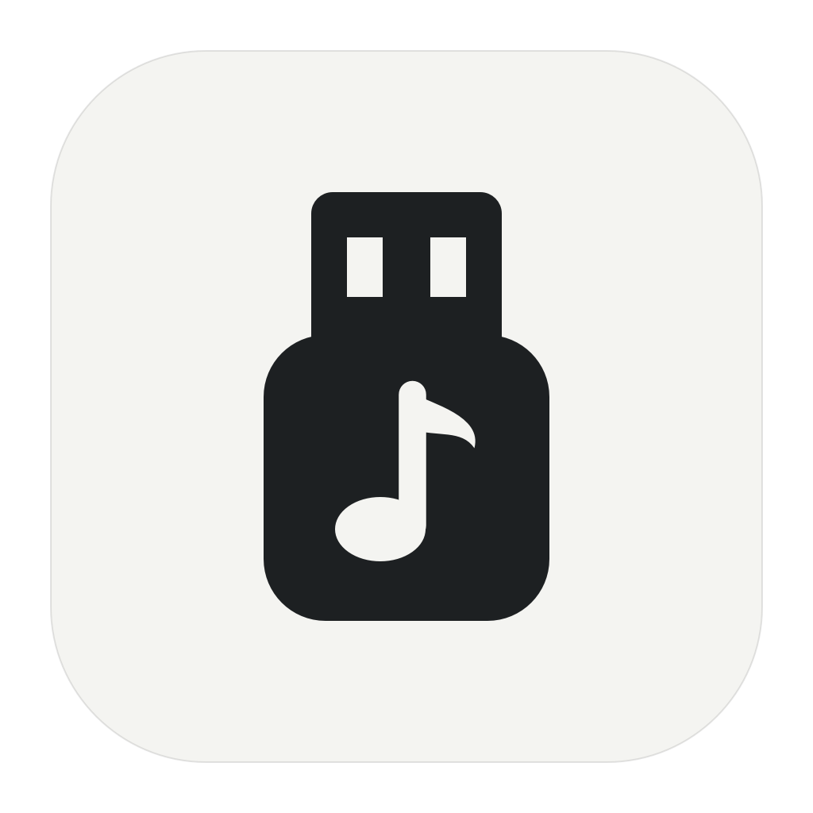
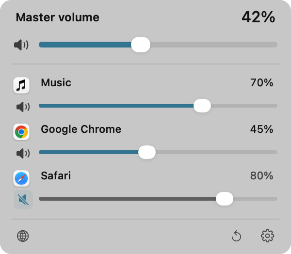
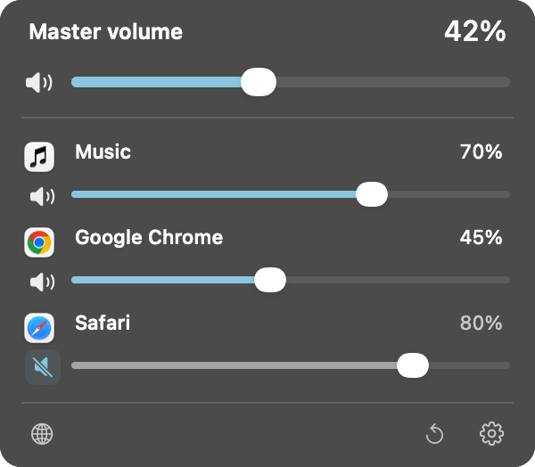
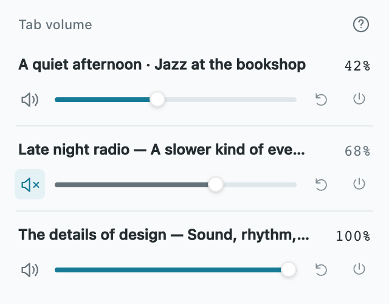

The whole room
One master slider and mute button for your USB speakers. Your level is remembered.

USB VolumeA little mixer for your Mac
Give your USB speakers a volume control. Keep music, meetings, and browser tabs in balance.
macOS 14.2+ Apple Silicon Free & open source

Only the controls you reach for.
One master slider and mute button for your USB speakers. Your level is remembered.
Turn music down and keep your call clear. Each audio app has its own volume and mute.
The included Chrome / Edge extension controls individual tabs from the browser toolbar.
Small on purpose
A compact native panel, light and dark appearances, and 14 languages. Short transitions respect Reduce Motion. Keyboard actions respond immediately.
Audio stays on your Mac. No recordings, uploads, or microphone access.


Download and unzip the app, then move it to your Applications folder.
This release is not notarized by Apple. If blocked, use Open Anyway in System Settings → Privacy & Security.
Enable volume control and allow system audio recording when asked. Use the menu bar slider to adjust.
Designed for stereo USB output devices with no input channels, on macOS 14.2+ and Apple Silicon. Hardware compatibility varies. Apps must output to the selected speaker to appear as controllable.
Master, app, and tab volume combine. An app at 100% follows the master level; reducing it adds attenuation. Tab controls live in the extension, not the Mac panel. Safari has no per-tab support; app grouping depends on the audio processes reported by macOS.
The permission lets the app read playback audio, adjust its level, and send it to your speakers. Audio is processed in memory and is never saved or uploaded. Media keys separately require Accessibility permission.
The speaker returns to its original volume, which may be louder. Pause playback before quitting or stopping control. Disconnecting leaves the app on standby; reconnecting asks whether to enable it.
The system volume slider may remain disabled. Creating an app audio route can briefly interrupt playback. Tab settings reset after a browser restart. Protected media and other audio processors may affect compatibility.
MIT licensed. Read the code, report a device, improve a translation, or build it yourself.